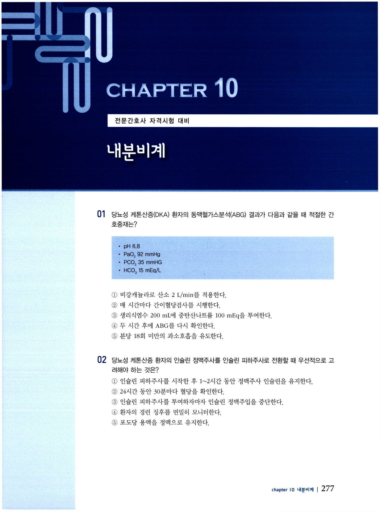
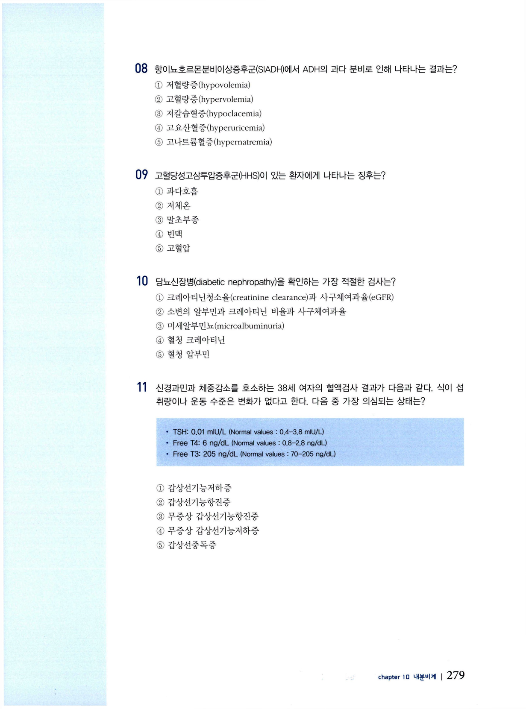
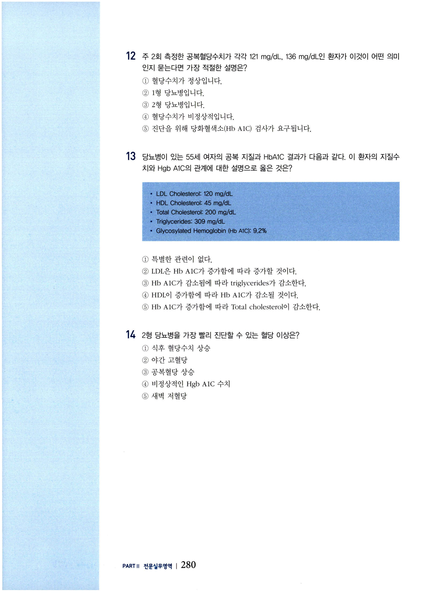
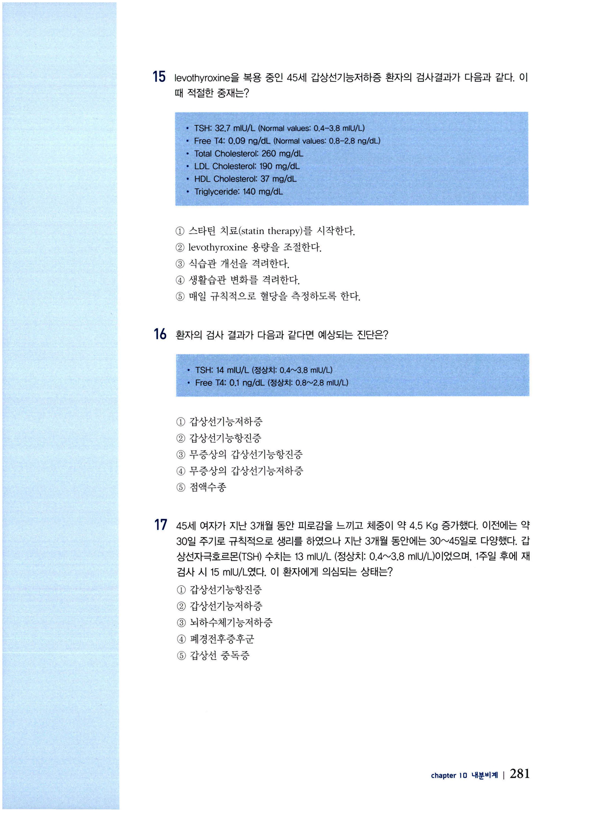
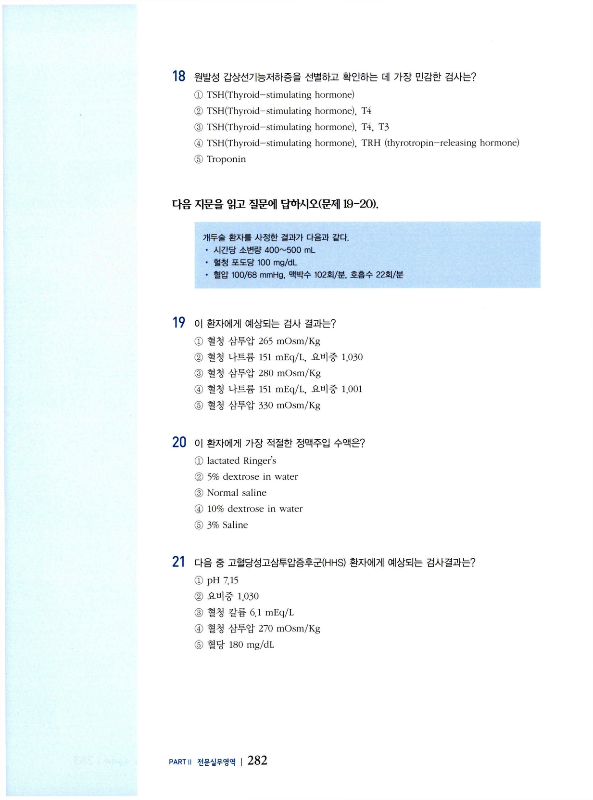

내분비계 문제
전문간호사 자격시험 대비 문제집 — 내분비계 (CHAPTER 10).
문 01 당뇨성 케톤산증(DKA) · ABG
당뇨성 케톤산증(DKA) 환자의 동맥혈가스분석(ABG) 결과가 다음과 같을 때 적절한 간호중재는?
pH 6.8 / PaO₂ 92 mmHg / PCO₂ 35 mmHg / HCO₃ 15 mEq/L
- 비강캐뉼라로 산소 2 L/min를 적용한다.
- 매 시간마다 간이혈당검사를 시행한다.
- 생리식염수 200 mL에 중탄산나트륨 100 mEq을 투여한다.
- 두 시간 후에 ABG를 다시 확인한다.
- 분당 18회 미만의 과소호흡을 유도한다.

문 02 DKA · 인슐린 정맥→피하 전환
당뇨성 케톤산증 환자의 인슐린 정맥주사를 인슐린 피하주사로 전환할 때 우선적으로 고려해야 하는 것은?
- 인슐린 피하주사를 시작한 후 1~2시간 동안 정맥주사 인슐린을 유지한다.
- 24시간 동안 30분마다 혈당을 확인한다.
- 인슐린 피하주사를 투여하자마자 인슐린 정맥주입을 중단한다.
- 환자의 경련 징후를 면밀히 모니터한다.
- 포도당 용액을 정맥으로 유지한다.
문 03 중증 저혈당 · 의식저하
심한 저혈당으로 의식이 저하되어 반응이 없는 환자에게 적절한 중재는?
- 물 25 mL에 50 % 포도당 용액을 정맥주사 하고 한 시간 후 재사정한다.
- 치즈와 크래커를 제공하고 15분 후에 재사정한다.
- 물 50 mL에 25 % 포도당 용액을 정맥주사하고 30분 후 재사정한다.
- 젤리 10개를 제공하고 6분 후 재사정한다.
- 30분간 지켜보다가 재사정한다.
문 04 요붕증(DI) 감별
뇌종양을 진단받고 중환자실에 입원한 30세 여자가 물을 지나치게 많이 섭취하는 것이 관찰되었다. 간호사는 환자의 물병을 6시간 동안 8번이나 채웠으며, 지난 24시간의 섭취량 및 배설량 상에서 환자의 배뇨량은 20L를 초과하였다. 이 환자에게 의심되는 상태는?
- 탈수
- 요붕증(diabetes insipidus)
- 항이뇨호르몬분비이상증후군(SIADH)
- 급성 부신기능부전증(acute adrenal insufficiency)
- 고혈당성고삼투압증후군
문 05 고혈당성고삼투압증후군(HHS) 소견
고혈당성고삼투압증후군(HHS) 환자에서 고혈당 이외에 다음 중 HHS와 관련 있는 결과는?
- 케톤뇨증 없음
- 혈청 삼투압 감소
- 아세톤 호흡
- 신경학적 변화 없음
- 소변량 감소
문 06 악성 폐암 · 위험 질환
최근 항암치료를 시작한 악성 폐암 환자에게 현재의 건강 상태와 치료요법으로 인해 나타날 위험이 높은 질환은?
- 쿠싱증후군(Cushing syndrome)
- 항이뇨호르몬분비이상증후군(SIADH)
- 애디슨 병(Addison disease)
- 갑상선 중독증(thyroid storm)
- 요붕증(DI)
문 07 SIADH 치료·간호
항이뇨호르몬분비이상증후군(SIADH) 환자의 치료 및 간호로 옳은 것은?
- 식이섭취량을 면밀히 모니터한다.
- Democlocycline, lithium, dilantin을 투여한다.
- 수분 정체를 위해서 저장성 식염수를 주입한다.
- BUN과 Creatinine 수치를 모니터한다.
- 바소프레신을 투여한다.
문 08 SIADH · ADH 과다분비 결과
항이뇨호르몬분비이상증후군(SIADH)에서 ADH의 과다 분비로 인해 나타나는 결과는?
- 저혈량증(hypovolemia)
- 고혈량증(hypervolemia)
- 저칼슘혈증(hypocalcemia)
- 고요산혈증(hyperuricemia)
- 고나트륨혈증(hypernatremia)
문 09 HHS 징후
고혈당성고삼투압증후군(HHS)이 있는 환자에게 나타나는 징후는?
- 과다호흡
- 저체온
- 말초부종
- 빈맥
- 고혈압
문 10 당뇨신장병 검사
당뇨신장병(diabetic nephropathy)을 확인하는 가장 적절한 검사는?
- 크레아티닌청소율(creatinine clearance)과 사구체여과율(eGFR)
- 소변의 알부민과 크레아티닌 비율과 사구체여과율
- 미세알부민뇨(microalbuminuria)
- 혈청 크레아티닌
- 혈청 알부민
문 11 갑상선기능 · 검사수치 해석
신경과민과 체중감소를 호소하는 38세 여자의 혈액검사 결과가 다음과 같다. 식이 섭취량이나 운동 수준은 변화가 없다고 한다. 다음 중 가장 의심되는 상태는?
TSH: 0.01 mIU/L (Normal values 0.4–3.8 mIU/L)
Free T4: 6 ng/dL (Normal values 0.8–2.8 ng/dL)
Free T3: 205 ng/dL (Normal values 70–205 ng/dL)
- 갑상선기능저하증
- 갑상선기능항진증
- 무증상 갑상선기능항진증
- 무증상 갑상선기능저하증
- 갑상선중독증

문 12 공복혈당 해석
주 2회 측정한 공복혈당수치가 각각 121 mg/dL, 136 mg/dL인 환자가 이것이 어떤 의미인지 묻는다면 가장 적절한 설명은?
- 혈당수치가 정상입니다.
- 1형 당뇨병입니다.
- 2형 당뇨병입니다.
- 혈당수치가 비정상적입니다.
- 진단을 위해 당화혈색소(HbA1C) 검사가 요구됩니다.
문 13 지질·HbA1C 관계
당뇨병이 있는 55세 여자의 공복 지질과 HbA1C 결과가 다음과 같다. 이 환자의 지질수치와 HbA1C의 관계에 대한 설명으로 옳은 것은?
LDL Cholesterol: 120 mg/dL / HDL Cholesterol: 45 mg/dL / Total Cholesterol: 200 mg/dL / Triglycerides: 309 mg/dL / Glycosylated Hemoglobin (HbA1C): 9.2%
- 특별한 관련이 없다.
- LDL은 HbA1C가 증가함에 따라 증가할 것이다.
- HbA1C가 감소됨에 따라 triglycerides가 감소한다.
- HDL이 증가함에 따라 HbA1C가 감소할 것이다.
- HbA1C가 증가함에 따라 Total cholesterol이 감소한다.

문 14 2형 당뇨 조기 진단
2형 당뇨병을 가장 빨리 진단할 수 있는 혈당 이상은?
- 식후 혈당수치 상승
- 야간 고혈당
- 공복혈당 상승
- 비정상적인 HbA1C 수치
- 새벽 저혈당
문 15 갑상선기능저하 · levothyroxine
levothyroxine을 복용 중인 45세 갑상선기능저하증 환자의 검사결과가 다음과 같다. 이 때 적절한 중재는?
TSH: 32.7 mIU/L (Normal values: 0.4–3.8 mIU/L)
Free T4: 0.09 ng/dL (Normal values: 0.8–2.8 ng/dL)
Total Cholesterol: 260 mg/dL / LDL Cholesterol: 190 mg/dL / HDL Cholesterol: 37 mg/dL / Triglyceride: 140 mg/dL
- 스타틴 치료(statin therapy)를 시작한다.
- levothyroxine 용량을 조절한다.
- 식습관 개선을 격려한다.
- 생활습관 변화를 격려한다.
- 매일 규칙적으로 혈당을 측정하도록 한다.

문 16 갑상선 검사수치 진단
환자의 검사 결과가 다음과 같다면 예상되는 진단은?
TSH: 14 mIU/L (정상치: 0.4~3.8 mIU/L)
Free T4: 0.1 ng/dL (정상치: 0.8~2.8 ng/dL)
- 갑상선기능저하증
- 갑상선기능항진증
- 무증상의 갑상선기능항진증
- 무증상의 갑상선기능저하증
- 점액수종
문 17 피로·체중증가 · TSH
45세 여자가 지난 3개월 동안 피로감을 느끼고 체중이 약 4.5 Kg 증가하였다. 이전에는 약 30일 주기로 규칙적으로 생리를 하였으나 지난 3개월 동안에는 30~45일로 다양하였다. 갑상선자극호르몬(TSH) 수치는 13 mIU/L (정상치: 0.4~3.8 mIU/L)이었으며 1주일 후에 재검사 시 15 mIU/L였다. 이 환자에게 의심되는 상태는?
- 갑상선기능항진증
- 갑상선기능저하증
- 뇌하수체기능저하증
- 폐경전후증후군
- 갑상선 중독증
문 18 원발성 갑상선기능저하 선별검사
원발성 갑상선기능저하증을 선별하고 확인하는 데 가장 민감한 검사는?
- TSH(Thyroid-stimulating hormone)
- TSH(Thyroid-stimulating hormone), T4
- TSH(Thyroid-stimulating hormone), T4, T3
- TSH(Thyroid-stimulating hormone), TRH(thyrotropin-releasing hormone)
- Troponin
문 19–20 개두술 후 요붕증(공유 지문)
다음 지문을 읽고 질문에 답하시오(문제 19–20).
개두술 환자를 사정한 결과가 다음과 같다.
시간당 소변량 400~500 mL / 혈청 포도당 100 mg/dL / 혈압 100/68 mmHg / 맥박수 102회/분 / 호흡수 22회/분
이 환자에게 예상되는 검사 결과는?
- 혈청 삼투압 265 mOsm/Kg, 혈청 나트륨 151 mEq/L, 요비중 1.030
- 혈청 삼투압 280 mOsm/Kg, 혈청 나트륨 151 mEq/L, 요비중 1.001
- 혈청 삼투압 330 mOsm/Kg
이 환자에게 가장 적절한 정맥주입 수액은?
- lactated Ringer's
- 5% dextrose in water
- Normal saline
- 10% dextrose in water
- 3% Saline

문 21 HHS 검사결과
다음 중 고혈당성고삼투압증후군(HHS) 환자에게 예상되는 검사결과는?
- pH 7.15
- 요비중 1.030
- 혈청 칼륨 6.1 mEq/L
- 혈청 삼투압 270 mOsm/Kg
- 혈당 180 mg/dL
문 22 metformin 작용기전
metformin (Glucophage)의 작용 기전은?
- 인슐린 생산 추진
- sulfonylureas 작용과 동일
- 말초 조직에서 인슐린 작용 증가와 간내 포도당 생성 감소
- 신장의 포도당 배설 추진
- 포도당 신생 억제
문 23 Sulfonylureas 작용기전
Sulfonylureas의 작용 기전은?
- 인슐린 수용체 활성화의 길항제
- 인슐린 분비를 증진하는 약물
- 신장 포도당 배설 촉진제
- 간내 포도당 생산을 감소시키는 약물
- 포도당 흡수 억제
문 24 당뇨·고혈압·단백뇨 항고혈압제
당뇨병과 고혈압을 진단받았고, 지속적인 단백뇨가 있는 환자에게 투여할 수 있는 항고혈압제는?
- furosemide
- methyldopa
- fosinopril
- nifedipine
- spironolactone
문 25 biguanide(Metformin) 추적검사
biguanide (Metformin)를 사용할 때 주기적으로 검사해야 하는 것은?
- creatine kinase (CK)
- alkaline phosphatase (ALP)
- alanine aminotransferase (ALT)
- creatinine (Cr)
- neutrophil
문 26 meglitinide analogues
2형 당뇨병에서 meglitinide analogues는 특히 어떠한 위험을 최소화하는 데 유용한가?
- 공복 저혈당
- 야행성 고혈당
- 식후 고혈당
- 식후 저혈당
- 식전 고혈당
문 27 alpha-glucosidase inhibitor 부작용
당뇨병 환자가 복용하는 alpha-glucosidase inhibitor의 가장 흔한 부작용은?
- 위장 장애
- 간독성
- 신장 기능 장애
- 증상이 있는 저혈당
- 이명
문 28 위마비증 · 금기 혈당약
2형 당뇨병을 진단받은 75세 남자에게 위마비증이 있을 때 투여할 수 없는 혈당조절 약물은?
- insulin glargine (Toujeo; Lantus)
- insulin aspart (NovoLog)
- glimepiride (Amaryl)
- liraglutide (Victoza)
- metformin (Glucophage)
문 29 Metformin 수술 전후 중단 이유
Metformin을 수술 후 48시간까지 중단해야 하는 이유는 다음 중 이 약물이 어떤 위험을 증가시키기 때문인가?
- 감염
- 저혈당
- 간손상
- 젖산혈증
- 마취효과 과다
문 30 Graves병 · 방사성 요오드
Graves' disease 치료 시 방사성 요오드를 사용하는 목적은?
- 고활동성 갑상선 조직 파괴
- TSH 생성 감소
- 갑상선 대사율 변경
- 증가된 갑상선 크기로 인한 고통 완화
- 갑상선 호르몬 생산 추진
문 31 갑상선기능항진 · 떨림/빈맥 완화
다음 중 갑상선기능항진증 환자의 떨림 및 빈맥의 완화에 효과가 있는 약물은?
- propranolol
- diazepam
- carbamazepine
- verapamil
- furosemide
문 32 노인 levothyroxine 주의사항
노인 환자에게 levothyroxine를 사용할 때 주의사항에 대한 설명으로 옳은 것은?
- 고령자는 levothyroxine 치료를 빨리 시작하는 것이 필요하다.
- 용량 조정 후 약 2일 정도 TSH를 확인해야 한다.
- 노인에게는 성인 용량의 75% 이하로 처방한다.
- TSH는 검출 불가능한 수준으로 억제되어야 한다.
- 칼슘과 함께 투여해야 한다.
문 33 levothyroxine 과다 부작용
levothyroxine을 과다 사용했을 때 초래될 수 있는 부작용은?
- 변비
- 피로감
- 신부전
- 골다공증
- 범혈구감소증
문 34 Addison병 확진 검사
34세 여자가 점진적 심약, 피로감, 식욕부진, 체중감소 등을 호소하며, 손가락·팔꿈치·무릎을 중심으로 과다 색소침착이 있어 Addison's disease가 의심된다. 이 질환의 확진을 위해 필요한 검사는?
- calcium
- TSH
- cortisol
- folate
- catecholamine
문 35 이차성 부신기능부전 기관
다음 중 기능장애가 있을 때 이차적 부신기능부전을 초래하는 기관은?
- 뇌하수체
- 갑상선
- 췌장
- 시상하부
- 부갑상선
문 36 뇌하수체절제술 후 부신위기
뇌하수체절제술(hypophysectomy)을 받은 43세 남자가 저혈압, 심한 오심과 구토가 있으며, 청색증과 함께 혼동 증상을 보인다. 이 환자에게 투여할 가장 적절한 약물은?
- epinephrine
- insulin
- adrenaline
- hydrocortisone
- glucose
문 37 쿠싱증후군 · 우선 중재
56세 여자가 과거 2년 동안 류마티스 관절염 치료를 위해 경구 스테로이드제를 복용했으며, 현재 쿠싱증후군이 의심된다. 이 환자에게 우선적인 중재는?
- 스테로이드제 사용을 점차적으로 줄인다.
- 수술을 의뢰한다.
- 방사선 치료를 고려한다.
- mifepristone을 처방한다.
- 이뇨제를 투여한다.